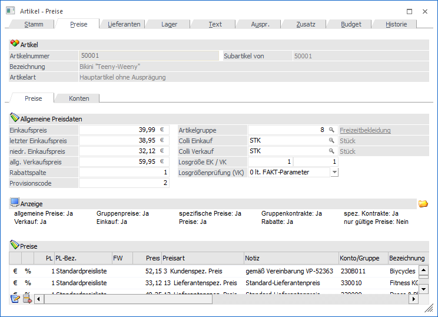
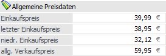
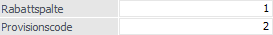
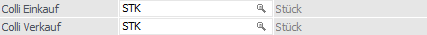
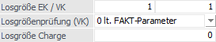
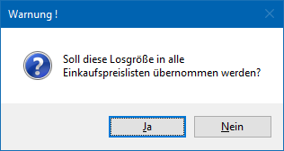
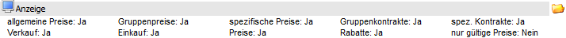
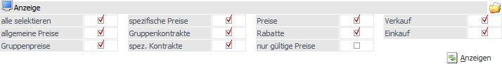
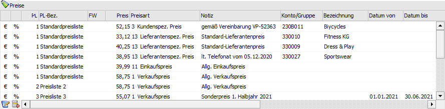
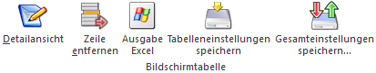

Artikel - Register "Preise" - Unterregister "Preise"
In dem Unterregister "Preise" werden alle preisrelevanten Daten für den Artikel hinterlegt.
Hinweis
Mit wie vielen Nachkommastellen die Preise angelegt werden können, hängt von der Einstellung in der hinterlegten Artikelgruppe ab.

Folgende Eingabefelder, Einstellungen und Informationen stehen zur Verfügung:
Allgemeine Preise

Ø Einkaufspreis
Hier kann der allgemeine Einkaufspreis hinterlegt werden. Wird bei einer Artikel-Neuanlage dieses Feld mit einem Wert gefüllt, so wird damit automatisch ein Preislisten-Eintrag in der Preistabelle erzeugt. Durch Anwahl des Buttons kann der Betrag auch in der zweiten Währung, welche im Mandantenstamm hinterlegt wurde (z.B. USD), eingegeben werden.
Hinweis
Bei Neuanlage eines Artikels wird der "Einkaufspreis" auch als vorläufiger Einstandspreis gesetzt.
Achtung
Der "Einkaufspreis" spielt in der Preisfindung der Belegerfassung keine Rolle. Es werden nur die Einträge der Preistabelle berücksichtigt
Ø letzter Einkaufspreis
Hier kann der letzte Einkaufspreis des Artikels eingetragen werden
Ø niedrigster Einkaufspreis
Hier kann der niedrigste Einkaufspreis des Artikels eingetragen werden.
Allgemeine Hinweis zu "letzte Einkaufspreise" und "niedrigste Einkaufspreis"
Folgende Punkte sind bezüglich letzten und niedrigsten Einkaufspreis zu beachten:
ü Wenn bei der verwendeten Belegart (für die Belegerfassung) bzw. bei der verwendeten Lagerbuchungsart (für die manuelle Lagerbuchung) die Option "letzte Einkaufspreis aktualisieren" und / oder "niedrigste Einkaufspreis aktualisieren" aktiviert wurde, so werden die Feld automatisch aktualisiert. In den FAKT-Parametern kann zusätzlich noch eingestellt werden, ob der Zeilenrabatt, der Summenrabatt und der Skonto berücksichtigt werden sollen
ü Bei der Artikelliste und der stichtagsbezogenen Bestandsliste kann bestimmt werden, nach welchem dieser Preise (letzter EK, niedrigster EK, ...) die Bewertung erfolgen soll. Des Weiteren kann auf Basis dieser Preise die Rohertragsermittlung erfolgen.
Ø allg. Verkaufspreis
In diesem Feld kann der allgemeine Verkaufspreis eingetragen werden. Wird bei einer Artikel-Neuanlage dieses Feld mit einem Wert gefüllt, so wird damit automatisch ein Preislisten-Eintrag in der Preistabelle erzeugt. Durch Anwahl des Buttons kann der Betrag auch in der zweiten Währung, welche im Mandantenstamm hinterlegt wurde (z.B. USD), eingegeben werden.
Achtung
Der "allg. Verkaufspreis" spielt in der Preisfindung der Belegerfassung keine Rolle. Es werden nur die Einträge der Preistabelle berücksichtigt.
Rabatt und Provision

Ø Rabattspalte
An dieser Stelle kann die Rabattspalte (0 bis 9999) für das Rabattsystem "Rabattmatrix" hinterlegt werden. Nach dieser Spalte wird wiederum in der (den) Rabattleiste(n) des Kunden / Lieferanten gesucht um einen passenden Rabatt zu finden.
Hinweis
Mit welchem Rabattsystem gearbeitet werden soll wird in den einzelnen Einträgen der Preistabelle definiert.
Ø Provisionscode
Der Provisionscode (PC) verweist auf eine Provisionsmatrix beim Vertreter, die beliebig viele Provisionsprozentsätze enthalten kann. So können für einen Artikel vertreterspezifische Provisionen verwaltet werden.
Artikelgruppe
Ø Artikelgruppe
An dieser Stelle wird dem Artikel eine Artikelgruppen (0 bis 9999) zugeordnet. Auf Basis der Artikelgruppe werden folgende Punkte gesteuert:
ü Summenrabatte sperren
ü Skonti sperren
ü die Belegerfassung mit Formeln steuern
ü Preiswartungen selektiv durchführen
ü Auswertungen eingrenzen (Statistik)
ü Formelabarbeitung (Zeile, Gesamtbeleg)
ü Selektionskriterium in diversen Listen und der Inventur
ü Steuerung der Nachkommastellen beim Preis und der Menge
Hinweis
Wenn der Artikel mit einem Preis mit 4 Nachkommastellen angelegt wurde, so wird bei einer Änderung der Artikelgruppe (auf eine mit weniger Nachkommastellen) der Preis zwar mit weniger Nachkommastellen im Artikelstamm angezeigt, intern bleibt jedoch der ursprüngliche Preis erhalten (mit denen auch die Berechnungen durchgeführt werden). D.h. nach einer Umstellung der Artikelgruppe müssen die Preise über die Preiswartung korrigiert werden.
Colli

In dem Bereich "Colli" werden die Verpackungseinheiten bzw. Maßeinheiten des Artikels hinterlegt. Der Colli dient hierbei nicht nur zur optische Ausweisung in welcher Einheit der Artikel ein- bzw. verkauft wird, sondern kann über sogenannte Stück- und Preisfaktoren die Mengen und die Preise in der Belegerfassung beeinflussen (nähere Informationen bezüglich der Faktoren entnehmen Sie bitte dem Kapitel Colli - Stamm).
Achtung
Folge Punkte sind bei Collis zu beachten:
ü Das Lager wird immer in dem "Colli Verkauf" geführt! D.h. z.B. in der Artikelbedarfsvorschau wird die Menge immer lt. "Colli Verkauf" dargestellt.
ü Der "Colli Einkauf" wird bei Lagerzubuchungen, Einkaufsbelegen und dem automatischen Bestellvorschlag berücksichtigt. Im Artikeljournal, in der Lieferantenrückstandsliste und im Protokoll über erzeugte Lieferantenbestellungen wird der Umrechnungsfaktor von Einkaufs-Colli in Verkaufs-Colli entsprechend ausgewiesen.
ü Bei Artikeln mit Lagerbewegungen können die Verpackungseinheiten (Collis) nicht mehr editiert werden.
ü Wird beim Einkaufs- bzw. beim Verkaufs-Colli ein numerischer Wert hinterlegt, welcher nicht im Colli-Stamm als Colli definiert wurde, so wird dieser Wert automatisch als Stück- und Preisfaktor herangezogen und in der WinLine FAKT entsprechend berücksichtigt.
ü Bei den Eingaben in den folgenden Colli-Feldern handelt es sich um die Basisdaten des Artikels. Diese Collis können über die Preislistenpreise des Artikels übersteuert werden.
Ø Colli Einkauf
Hier kann die Einheit hinterlegt werden, die in einer Liefereinheit des Lieferanten enthalten ist.
Beispiel
1 Karton enthält 6 Stück (Colli Einkauf = 6).
Achtung
Bitte beachten, dass der Preisfaktor lt. Preiseinheit im Colli-Stamm hinterlegt wird.
Ø Colli Verkauf
Hier kann die Einheit hinterlegt werden, die in einer Liefereinheit an den Kunden enthalten ist.
Beispiel
1 Packung enthält 4 Flaschen (Colli Verkauf = 4).
Losgröße

Ø Losgröße EK
In diesem Feld kann eine Losgröße für Einkaufsbelege bzw. Einkaufs-Kontrakte hinterlegen werden. Dieser Wert dient dabei als Vorbelegung für die Anlage von Einkaufspreisen in der Preistabelle (kann dort jederzeit editiert werden).
Wird die Losgröße an dieser Stelle geändert, kann nach Abfrage dieser neue Wert in alle Einkaufspreise eingetragen werden.

Beispiel
Losgröße lt. Artikelstamm = 100 Stück / Bestellung über 186 Stück
Das Programm würde in diesem Fall eine Meldung im Belegerfassen bringen, dass eine Losgröße von 100 Stück vereinbart wurde. Die vom Programm vorgeschlagene Menge (200 Stück) kann akzeptiert oder die manuell eingegebene Menge beibehalten werden.
Achtung
Wurde in den FAKT-Parametern (Bereich "Einkauf") die Option "Losgröße - automatische Korrektur" aktiviert, so wird die Menge gemäß der Losgröße ohne zusätzliche Abfrage korrigiert.
Ø Losgröße VK
In diesem Feld kann eine Losgröße für die Verkaufsbelege bzw. Verkaufs-Kontrakten hinterlegt werden.
Dieser Wert dient dabei als Vorbelegung für die Anlage von Verkaufspreisen in der Preistabelle (kann dort jederzeit editiert werden).
Wird die Losgröße an dieser Stelle geändert, kann nach Abfrage dieser neue Wert in alle Verkaufspreise eingetragen werden.
Achtung
Diese Prüfung bzw. Korrektur erfolgt gemäß der Einstellung im nächsten Eingabefeld "Losgrößenprüfung"!
Ø Losgrößenprüfung (VK)
Aus der Auswahlbox kann gewählt werden, was bei Unterschreitung der angegebenen Losgröße im Verkauf passieren soll. Folgende Möglichkeiten stehen zur Auswahl:
ü 0 - lt. FAKT-Parameter
Es wird
auf die Einstellung der FAKT-Parameter (Bereich "Belege - Erweiterte Optionen")
zurückgegriffen (nähere Informationen entnehmen Sie bitte dem Handbuch "WinLine
START - FAKT-Parameter")
ü 1 - Die Losgröße darf
unterschritten werden
Wird diese Option gewählt, so erfolgt weder eine
Warnung noch eine automatische Anpassung, d.h. die eingetragene Losgröße wird
nicht berücksichtigt.
ü 2 - Die Losgröße darf mit Warnung
unterschritten werden
Bei Verwendung dieser Option erfolgt bei
Unterschreitung der hinterlegten Losgröße eine Warnung, welche mit "Ok"
bestätigt werden muss.
ü 3 - Die Losgröße wird automatisch
aufgefüllt
Mit dieser Option wird bei Unterschreitung der hinterlegten
Losgröße automatisch auf diese (ohne Warnung) aufgefüllt.
Beispiel
Losgröße lt. Artikelstamm = 12
Stück
Wird eine Artikelzeile mit Menge 10 Stück erfasst, wird automatisch auf
12 Stück korrigiert.
Wird eine Artikelzeile mit Menge 15 Stück erfasst, wird
automatisch auf die nächste multiplizierte Losgröße - also 24 Stück -
erhöht.
ü 4 - Die Losgröße wird mit Warnung
automatisch aufgefüllt
Bei Unterschreitung der Losgröße wird diese
automatisch auf die hinterlegte Menge aufgefüllt. Dabei wird zusätzlich eine
entsprechende Meldung angezeigt.
Hinweis für "Artikel mit Ausprägungen"
Die Eingabe im Ausprägungsfenster wird nur geprüft, wenn die einzelnen Ausprägungen einen eigenen Preisstamm haben.
Wenn die Ausprägungen hingegen im Preisstamm auf den Hauptartikel verweisen, wird die gesamte eingegebene Menge beim Drücken Buttons "Ok" geprüft. D.h. ist beim Artikel als Losgröße von z.B. 12 Stück. hinterlegt, erfolgt beim Verlassen des Aufteilungsfensters mittels Button "Ok" die Prüfung, ob die Gesamtmenge aller Ausprägungen den 12 Stück entspricht. Zusätzlich verhält sich die WinLine je nach Belegtyp wie folgt:
ü Verkauf
Bei Verwendung der
Option 3 oder 4, erfolgt eine Warnung sofern die angegebenen Mengen (Gesamtmenge
der Ausprägungen) nicht der Losgröße entsprechen, die Menge wird automatisch bei
der ersten Ausprägung aufgefüllt und das Ausprägungsfenster geschlossen.
ü Einkauf
Wie die Losgröße im
Einkauf behandelt werden soll, wird in den FAKT-Parametern (Bereich "Einkauf")
über die Option "Losgröße - automatische Korrektur" gesteuert.
Ø Losgröße Charge
Dieses Feld steht nur bei Hauptartikeln mit Chargenverwaltung (Charge, LIFO oder FIFO), bei denen die Preisverknüpfung auf den Hauptartikel liegt, zur Verfügung.
Wird in diesem Feld ein Wert eingetragen, dann wird dieser bei der "automatischen Chargenanlage" entsprechend vorgeschlagen, so dass die Menge pro Charge korrekt vorbelegt wird.
Anzeige

An dieser Stelle kann definiert werden, welche Preise in der darunterliegenden Preistabelle angezeigt werden sollen. Zunächst wird die Anzeige in Form von Textinformationen dargestellt.
Änderung können nach der Anwahl des Ordner-Symbols vorgenommen werden. In der "expandierten" Anzeige ist es dann möglich, durch das Aktivieren bzw. Deaktivieren von Checkboxen, die Anzeige individuell zu gestallten.
Hinweis
Die getroffene Einstellung wird benutzerspezifisch gespeichert.

Ø alle selektieren
Durch Aktivieren dieser Checkbox werden die Optionen "allgemeine Preise", "Gruppenpreise", "spezifische Preise", "Gruppenkontrakte" und "spez. Kontrakte " zur Anzeige aktiviert.
Ø allgemeine Preise
Mit dieser Option werden Preiseinträge der Art "1 - Verkaufspreis" bzw. "11 - Einkaufspreis" angezeigt.
Ø Gruppenpreise
Mit dieser Option werden Preiseinträge der Art "2 - Kundengruppenpreis" bzw. "12 - Lieferantengruppenpreis" angezeigt.
Ø spezifische Preise
Mit dieser Option werden Preiseinträge der Art "3 - Kundenspezifische Preis" bzw. "13 - Lieferantenspezifische Preis" angezeigt.
Ø Gruppenkontrakte
Mit dieser Option werden Preiseinträge der Art "4 - Kundengruppenkontraktpreis" bzw. "14 - Lieferantengruppenkontraktpreis" angezeigt.
Ø spez. Kontrakte
Mit dieser Option werden Preiseinträge der Art "5 - Kundenspez. Kontraktpreis" bzw. "15 - Lieferantenspez. Kontraktpreis" angezeigt.
Ø Preise
Wird diese Option aktiviert, so werden zusätzlich zu den Preiseinträgen des Typs "0 - Preis und Rabatt" jene des Typs "1 - Preis" angezeigt.
Ø Rabatte
Wird diese Option aktiviert, so werden zusätzlich zu den Preiseinträgen des Typs "0 - Preis und Rabatt" jene des Typs "2 - Rabatt" angezeigt.
Ø nur gültige Preise
Durch Aktivieren dieser Option wird gesteuert, dass nur jene Preise dargestellt werden die zum Tagesdatum gültig sind.
Hinweis
Bei Änderung dieser Einstellung wird die Option "nur gültige Preise" im Register "Lieferanten" ebenfalls aktualisiert.
Ø Verkauf
Durch Aktivieren dieser Option werden nur jene Preiszeilen angezeigt, die für den Verkauf herangezogen werden können.
Ø Einkauf
Durch Aktivieren dieser Option werden nur jene Preiszeilen angezeigt, die für den Einkauf herangezogen werden können.
Ø  Anzeige
Anzeige
Durch Anwahl des Buttons "Anzeige" wird die Preistabelle gemäß den gewählten Einstellungen aktualisiert.
Tabelle "Preise

In der Preistabelle werden alle, lt. dem Bereich "Anzeige" gewünschten, Preiseinträge des Artikels angezeigt. Der Preis selber setzt sich dabei aus vielen unterschiedlichen Punkten zusammen, was in den einzelnen Spalten entsprechend aufbereitet wird (nähere Informationen zu den einzelnen Spalten entnehmen Sie bitte dem Kapitel Artikel - Register "Detailansicht").
Hinweis
Neben den Standardspalten stehen über die rechte Maustaste (Funktion "Spalten anzeigen / verstecken") weitere Spalten zur Verfügung.
Tabellenbuttons

Ø Detailansicht
Es wird das Register "Detailansicht" aufgerufen, in welchem die Daten des aktuellen Preises editiert werden können.
Hinweis
Dieses ist auch bei neuen Preiseinträgen möglich.
Ø Zeile entfernen
Durch Anwahl des Buttons wird die markierte Preiszeile gelöscht.
Ø Ausgabe Excel
Durch Anwahl des Buttons "Ausgabe Excel" wird der Inhalt der Tabelle an Microsoft Excel übergeben.
Ø Tabelleneinstellungen speichern
Die Spalten einer Tabelle können grundsätzlich an beliebige Positionen verschoben, bzw. in der Breite entsprechend angepasst werden. Durch Anwahl des Buttons "Tabelleneinstellungen speichern" werden die Einstellungen benutzerspezifisch gespeichert und bei dem nächsten Aufruf des Programmpunktes wieder vorgeschlagen.
Ø Gesamteinstellungen speichern
Im Gegensatz zu "Tabelleneinstellungen speichern" können mit "Gesamteinstellungen speichern" mehrere Tabellenaufbauten gespeichert und nach Wunsch geladen werden. Zusätzlich werden Sonderfunktionen der Tabelle (z.B. "Spalte gruppieren") ebenfalls bei der Speicherung bedacht.